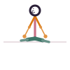

Accomplished Pose
Siddhasana
How to
Sit with one heel pressed against the perineum and the other foot resting on top, in front of the first ankle, spine tall.
Benefits
- A traditional stable seat for meditation
- Opens the hips gently
- Calms the nervous system
Practice
Sit for 3-10 minutes, alternating which foot sits in front from session to session.

Get the Asanas appFree, no ads, works offline
Google Play
General information, not medical advice. If you have a health condition or pain, talk to a doctor or qualified teacher first.